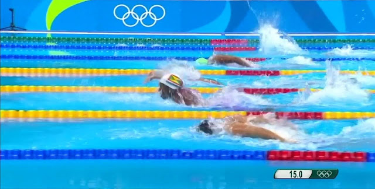

Futebol
O futebol é um esporte que fascina milhões ao redor do mundo por diversos motivos. Ele vai além da simples competição; é uma celebração de habilidade, paixão e união. Uma das razões para se apaixonar por futebol é a emoção que ele proporciona. Desde um gol incrível até uma partida decidida nos últimos segundos, o futebol consegue envolver os torcedores em uma montanha-russa de sentimentos. Além disso, o futebol tem o poder de conectar pessoas. Seja torcendo pelo mesmo time ou discutindo sobre jogadores e estratégias, ele cria laços entre amigos, familiares e até desconhecidos. É um esporte universal que atravessa barreiras culturais e une pessoas de diferentes partes do mundo. Por fim, o futebol inspira. Ele é uma expressão de criatividade e dedicação, e as histórias de superação de atletas ao redor do mundo são fonte de motivação para muitos. Seja jogando ou assistindo, o futebol tem o poder de transformar um simples dia em algo especial.
Natação
 A natação é um esporte que combina perfeitamente saúde, prazer e desafio, tornando-se irresistível para quem a pratica. Um dos grandes motivos para gostar de natação é o impacto positivo que ela tem no corpo e na mente. É uma atividade completa, que fortalece a musculatura, melhora a capacidade respiratória e promove o bem-estar geral, tudo isso com baixo impacto nas articulações, sendo ideal para todas as idades. Além disso, a natação traz uma sensação única de liberdade. Estar na água permite desconectar-se do mundo exterior e conectar-se consigo mesmo. Seja nadando em uma piscina tranquila ou no vasto mar, a experiência de deslizar pela água é relaxante e revigorante ao mesmo tempo. Por fim, a natação é um esporte versátil e cheio de possibilidades. Seja como exercício físico, terapia ou até lazer, ela oferece benefícios e momentos inesquecíveis para todos que se entregam ao mundo aquático. É uma paixão que une saúde, tranquilidade e conquista.